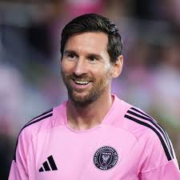
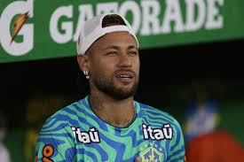

Lionel Messi is widely regarded as one of the greatest footballers in history. Born on June 24, 1987, in Rosario, Argentina, Messi began his football journey at a young age and later joined the youth academy of FC Barcelona. His incredible dribbling, vision, passing, and goal-scoring ability quickly made him a global superstar.

Neymar Jr is one of the most talented footballers of his generation. Born on February 5, 1992, in Brazil, Neymar became famous for his incredible dribbling skills, speed, creativity, and goal-scoring ability. He started his professional career at Santos FC, where he quickly became one of the biggest young stars in world football. In 2013, Neymar joined FC Barcelona and formed a legendary attacking trio with Lionel Messi and Luis Suárez. Together, they won several trophies, including the UEFA Champions League in 2015.

Lamine Yamal is one of the brightest young talents in world football. Born on July 13, 2007, in Spain, he rose through the famous La Masia academy of FC Barcelona and quickly became known for his incredible dribbling, creativity, speed, and football intelligence. At just 16 years old, Yamal broke several records for both FC Barcelona and the Spain national football team, becoming one of the youngest players ever to score and play at the highest level.